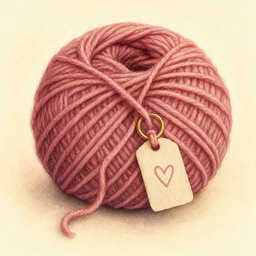
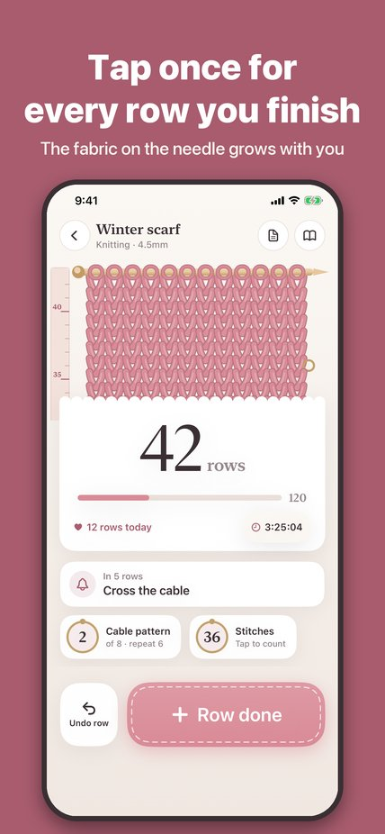
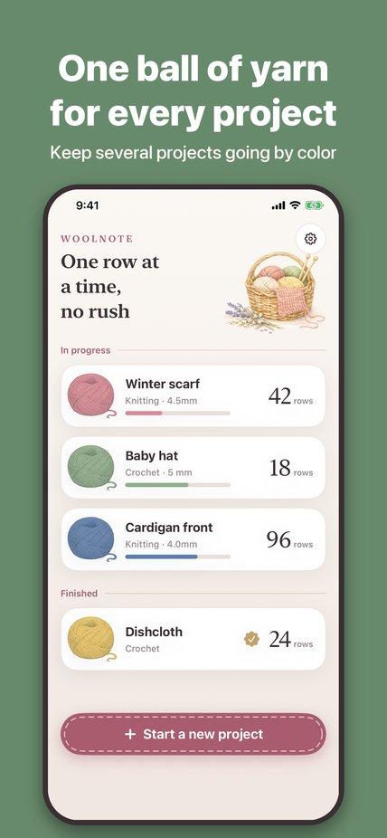
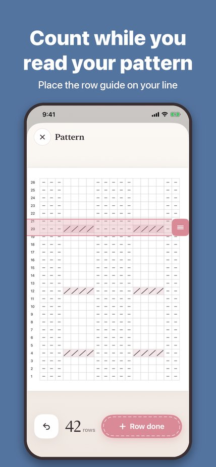

뜨개질 단 수 카운터와 작품 수첩
Row counter and project notebook for knitting and crochet



한 단을 끝낼 때마다 한 번 누르면 바늘에 걸린 편물이 한 단씩 자랍니다. 무늬 반복과 코 늘림 알림을 함께 세고, 작품마다 실과 바늘, 메모, 사진, 도안을 수첩에 남깁니다. 대바늘과 코바늘 모두 쓸 수 있습니다.
회원 가입이 없고 기록은 기기 안에만 저장됩니다. Woolnote는 도안을 제공하지 않습니다.
Tap once each time you finish a row and watch the fabric on the needle grow. Count pattern repeats and increase reminders alongside, and keep yarn, needles, notes, a photo and your own pattern in a notebook for every project. Works for both knitting and crochet.
No account is needed and everything stays on your device. Woolnote does not provide patterns.